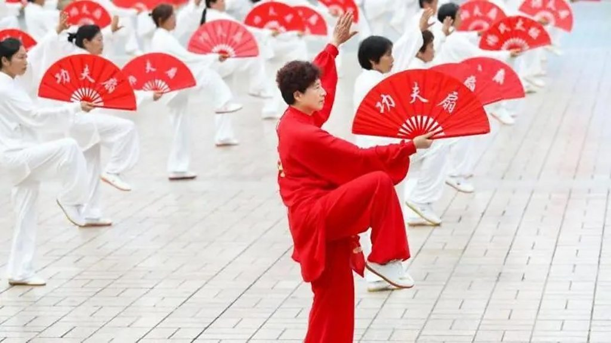

Uma das culturas mais antigas e ricas do mundo, cheia de tradições, filosofia e costumes que atravessam milhares de anos.
A cultura chinesa é marcada por uma longa história que influencia costumes, valores e o modo de vida até os dias atuais.
Filosofias como o confucionismo, o taoismo e o budismo tiveram grande impacto na sociedade, promovendo respeito, harmonia e equilíbrio.

Práticas como Kung Fu e Tai Chi fazem parte da cultura, promovendo disciplina, equilíbrio e saúde.
O Ano Novo Chinês é o festival mais importante, marcado por fogos, danças do dragão e celebrações familiares.
A escrita chinesa é considerada uma forma de arte, valorizando beleza, precisão e expressão.
A sociedade chinesa valoriza profundamente o respeito aos mais velhos, a importância da família e a busca pelo equilíbrio entre corpo e mente. Esses valores estão ligados a tradições antigas e influenciam o comportamento das pessoas até hoje.
Além disso, a disciplina, a educação e o trabalho em equipe são muito valorizados, contribuindo para o desenvolvimento pessoal e coletivo. A harmonia social também é um princípio importante, onde o bem-estar do grupo muitas vezes é colocado acima do individual.
Esses valores refletem a filosofia chinesa, que busca equilíbrio, respeito e convivência em sociedade, sendo fundamentais para a identidade cultural do país.
O dragão é um símbolo de poder, força e sorte na cultura chinesa, sendo muito presente em festivais e tradições.